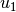
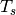

Examples¶
Ellipsoids vs. Polytopes¶
Depending on the particular dynamical system, certain methods of reach set computation may be more suitable than others. Even for a simple 2-dimensional discrete-time linear time-invariant system, application of ellipsoidal methods may be more effective than using polytopes.
Consider the system from chapter 1:
where  is the set of initial conditions, and
is the set of initial conditions, and
 is the control set.
is the control set.

Figure 1: Reach set computation performance comparison.
Let and be unit boxes in
, and compute the reach set using the polytope method
implemented in MPT [MPTHP]. With every
time step the number of vertices of the reach set polytope increases by
. The complexity of the convex hull computation increases
exponentially with number of vertices. In figure 1, the time
required to compute the reach set for different time steps using
polytopes is shown in red.
To compute the reach set of the system using Ellipsoidal Toolbox, we
assume and to be unit balls in
, fix any number of initial direction values that
corresponds to the number of ellipsoidal approximations, and obtain
external and internal ellipsoidal approximations of the reach set:
1 2 3 4 5 6 7 8 9 10 11 | aMat = [cos(1) sin(1); -sin(1) cos(1)];
uBoundsEllObj = ell_unitball(2); % control bounds
% define linear discrete-time system
lsys = elltool.linsys.LinSysFactory.create(aMat, eye(2), uBoundsEllObj,...
[], [], 'd');
x0EllObj = ell_unitball(2); % set of initial conditions
dirsMat = [cos(0:0.1:pi); sin(0:0.1:pi)]; % 32 initial directions
nSteps = 100; % number of time steps
% compute the reach set
rsObj = elltool.reach.ReachDiscrete(lsys, x0EllObj, dirsMat, [0 nSteps]);
|
In figure 1, the time required to compute both external and internal ellipsoidal approximations, with ellipsoids each, for different number of time steps is shown in blue.
Figure 1 illustrates the fact that the complexity of polytope method grows exponentially with number of time steps, whereas the complexity of ellipsoidal method grows linearly.
System with Disturbance¶

Figure 2: Spring-mass system.
The mechanical system presented in figure 2, is described by the following system of equations:
(1)
(2)
Here  and are the forces applied to masses
 and , and we shall assume
. The initial conditions can
be taken as ,
and , and we shall assume
. The initial conditions can
be taken as ,  . Defining
and , we can rewrite
(1)-(2) as a linear system in standard form:
. Defining
and , we can rewrite
(1)-(2) as a linear system in standard form:
(3)![\left[\begin{array}{c}
\dot{x}_1 \\
\dot{x}_2 \\
\dot{x}_3 \\
\dot{x}_4 \end{array}\right] = \left[\begin{array}{cccc}
0 & 0 & 1 & 0\\
0 & 0 & 0 & 1\\
-\frac{k_1+k_2}{m_1} & \frac{k_2}{m_1} & 0 & 0\\
\frac{k_2}{m_2} & -\frac{k_1+k_2}{m_2} & 0 & 0\end{array}\right]
\left[\begin{array}{c}
x_1 \\
x_2 \\
x_3 \\
x_4 \end{array}\right] + \left[\begin{array}{cc}
0 & 0\\
0 & 0\\
\frac{1}{m_1} & 0\\
0 & \frac{1}{m_2}\end{array}\right]\left[\begin{array}{c}
u_1\\
u_2\end{array}\right].](_images/math/07f7fa7cfca5817564b8afda40665b523bd56aac.png)
Now we can compute the reach set of system (1)-(2) for given time by computing the reach set of the linear system (3) and taking its projection onto subspace.

Figure 3: Spring-mass system without disturbance: (a) reach tube for time ; (b) reach set at time . Spring-mass system with disturbance: (c) reach tube for time ; (d) reach set at time .
1 2 3 4 5 6 7 8 9 10 11 12 13 14 15 16 17 18 19 20 21 22 23 24 25 26 27 28 29 30 31 32 33 | k1 = 24; k2 = 32;
m1 = 1.5; m2 = 1;
% define matrices aMat, bMat, and control bounds uBoundsEll:
aMat = [0 0 1 0; 0 0 0 1; -(k1+k2)/m1 k2/m1 0 0; k2/m2 -(k1+k2)/m2 0 0];
bMat = [0 0; 0 0; 1/m1 0; 0 1/m2];
uBoundsEllObj = ell_unitball(2);
% linear system
lsys = elltool.linsys.LinSysContinuous(aMat, bMat, uBoundsEllObj);
timeVec = [0 4]; % time interval% initial conditions:
x0EllObj = [0 2 0 0].' + ellipsoid([0.01 0 0 0; 0 0.01 0 0; 0 0 0 0;...
0 0 0 0]);
% initial directions (some random vectors in R^4):
dirsMat = [1 0 1 0; 1 -1 0 0; 0 -1 0 1; 1 1 -1 1; -1 1 1 0; -2 0 1 1].';
% reach set
rsObj = elltool.reach.ReachContinuous(lsys, x0EllObj, dirsMat, timeVec,...
'isRegEnabled', true, 'isJustCheck', false, 'regTol', 1e-3);
basisMat = [1 0 0 0; 0 1 0 0]'; % orthogonal basis of (x1, x2) subspace
psObj = rsObj.projection(basisMat); % reach set projection
% plot projection of reach set external approximation:
plObj=smartdb.disp.RelationDataPlotter('figureGroupKeySuffFunc',@(x)sprintf('_tube_without_disturbance%d',x));
% plot the whole reach tube:
psObj.plotByEa('g', plObj); % to have the use of plObj isn't necessary
%psObj.plotByEa('g');
%
% ReachContinuous's cut() doesn't work with projections:
psObj = psObj.cut(4);
plObj=smartdb.disp.RelationDataPlotter('figureGroupKeySuffFunc',@(x)sprintf('_set_without_disturbance%d',x));
% plot reach set approximation at time t = 4:
psObj.plotByEa('g', plObj); % to have the use of plObj isn't necessary
%psObj.plotByEa('g');
|
Figure 3 (a) shows the reach set of the system (1)-(2) evolving in time from to . Figure 3 (b) presents a snapshot of this reach set at time .
So far we considered an ideal system without any disturbance, such as
friction. We introduce disturbance to (1)-(2) by adding
extra terms, and  ,
,
(4)
(5)
which results in equation (3) getting an extra term
Assuming that is unknown but bounded by ellipsoid , we can compute the closed-loop reach set of the system with disturbance.
1 2 3 4 5 6 7 8 9 10 11 12 13 14 15 16 17 18 19 20 21 22 23 24 | % define disturbance:
gMat = [0 0; 0 0; 1 0; 0 1];
vEllObj = 0.05*ell_unitball(2);
% linear system with disturbance
lsysd = elltool.linsys.LinSysContinuous(aMat, bMat, uBoundsEllObj,...
gMat, vEllObj);
% reach set
rsdObj = elltool.reach.ReachContinuous(lsysd, x0EllObj, dirsMat,...
timeVec, 'isRegEnabled', true, 'isJustCheck', false, 'regTol', 1e-1);
psdObj = rsdObj.projection(basisMat); % reach set projection onto (x1, x2)
% plot projection of reach set external approximation:
plObj=smartdb.disp.RelationDataPlotter('figureGroupKeySuffFunc',@(x)sprintf('_tube_with_disturbance%d',x));
% plot the whole reach tube:
psdObj.plotByEa(plObj); % to have the use of plObj isn't necessary
%psObj.plotByEa();
% plot reach set approximation at time t = 4:
psdCutObj = psdObj.cut(4);
plObj=smartdb.disp.RelationDataPlotter('figureGroupKeySuffFunc',@(x)sprintf('_set_with_disturbance%d',x));
psdCutObj.plotByEa(plObj); % to have the use of plObj isn't necessary
%psdCutObj.plotByEa();
|
Figure 3 (c) shows the reach set of the system (4)-(5) evolving in time from to . Figure 3 (d) presents a snapshot of this reach set at time .
Switched System¶

Figure 4: RLC circuit with two inputs.
By switched systems we mean systems whose dynamics changes at known
times. Consider the RLC circuit shown in figure 4. It has two
inputs - the voltage () and current ( ) sources. Define
) sources. Define
 - voltage across capacitor , so
is the corresponding current;
- voltage across capacitor , so
is the corresponding current;- - voltage across capacitor , so the corresponding current is .
- - current through the inductor
 , so the voltage
across the inductor is .
, so the voltage
across the inductor is .
Applying Kirchoff current and voltage laws we arrive at the linear system,
(6)
The parameters , , , and
, as well as the inputs, may depend on time. Suppose, for time
, Ohm, Ohm,
F, F, H, both inputs,
and are present and bounded by ellipsoid
; and for time  ,
Ohm, F, H, the current
source is turned off, and . Then, system (6)
can be rewritten as
,
Ohm, F, H, the current
source is turned off, and . Then, system (6)
can be rewritten as
(7)![\left[\begin{array}{c}
\dot{x}_1\\
\dot{x}_2\\
\dot{x}_3\end{array}\right] = \left\{\begin{array}{ll}
\left[\begin{array}{ccc}
-\frac{1}{6} & 0 & -\frac{1}{3}\\
0 & 0 & \frac{1}{7}\\
\frac{1}{2} & -\frac{1}{2} & -\frac{1}{2}\end{array}\right]
\left[\begin{array}{c}
x_1\\
x_2\\
x_3\end{array}\right] + \left[\begin{array}{cc}
\frac{1}{6} & \frac{1}{3}\\
0 & 0\\
0 & 0\end{array}\right]\left[\begin{array}{c}
v\\
i\end{array}\right], & 0\leqslant t< 2, \\
\left[\begin{array}{ccc}
-\frac{1}{6} & 0 & -\frac{1}{3}\\
0 & 0 & \frac{1}{3}\\
\frac{1}{6} & -\frac{1}{6} & -\frac{1}{3}\end{array}\right]
\left[\begin{array}{c}
x_1\\
x_2\\
x_3\end{array}\right] + \left[\begin{array}{c}
\frac{1}{6} \\
0 \\
0 \end{array}\right]v, & 2\leqslant t. \end{array}\right.](_images/math/20fa061b00ae010434eb4d9c7a909a7d7d59b017.png)
We can compute the reach set of (7) for some time  ,
say, .
,
say, .
1 2 3 4 5 6 7 8 9 10 11 12 13 14 15 16 17 18 19 20 21 22 23 24 25 26 27 28 29 30 31 32 33 34 35 36 37 38 39 40 41 42 43 44 45 46 47 48 49 50 51 52 53 54 55 56 57 58 59 60 61 62 | % define system 1
firstAMat = [-1/6 0 -1/3; 0 0 1/7; 1/2 -1/2 -1/2];
firstBMat = [1/6 1/3; 0 0; 0 0];
firstUBoundsEllObj = ellipsoid(eye(2));
firstSys = elltool.linsys.LinSysContinuous(firstAMat, firstBMat,...
firstUBoundsEllObj);
% define system 2:
secAMat = [-1/6 0 -1/3; 0 0 1/3; 1/6 -1/6 -1/3];
secBMat = [1/6; 0; 0];
secUBoundsEllObj = ellipsoid(1);
secondSys = elltool.linsys.LinSysContinuous(secAMat, secBMat,....
secUBoundsEllObj);
x0EllObj = ellipsoid(0.01*eye(3)); % set of initial states
dirsMat = eye(3); % 3 initial directions
switchTime = 2; % time of switch
termTime = 3; % terminating time
% compute the reach set:
firstRsObj = elltool.reach.ReachContinuous(firstSys, x0EllObj, dirsMat,...
[0 switchTime], 'isRegEnabled', true, 'isJustCheck', false,...
'regTol', 1e-5); % reach set of the first system
% computation of the second reach set starts
% where the first left off
secRsObj = firstRsObj.evolve(termTime, secondSys);
% obtain projections onto (x1, x2) subspace:
basisMat = [1 0 0; 0 1 0]'; % (x1, x2) subspace basis
firstPsObj = firstRsObj.projection(basisMat);
secPsObj = secRsObj.projection(basisMat);
% plot the results:
plObj=smartdb.disp.RelationDataPlotter('figureGroupKeySuffFunc',@(x)sprintf('_forward_reach_set_proj1%d',x));
% to have the use of plObj isn't necessary
firstPsObj.plotByEa('r', plObj); % external apprx. of reach set 1 (red)
%firstPsObj.plotByEa('r');
hold on;
plObj=smartdb.disp.RelationDataPlotter('figureGroupKeySuffFunc',@(x)sprintf('_forward_reach_set_proj2%d',x));
% to have the use of plObj isn't necessary
firstPsObj.plotByIa('g', plObj); % internal apprx. of reach set 1 (green)
%firstPsObj.plotByIa('g');
plObj=smartdb.disp.RelationDataPlotter('figureGroupKeySuffFunc',@(x)sprintf('_forward_reach_set_proj3%d',x));
% to have the use of plObj isn't necessary
secPsObj.plotByEa('y', plObj); % external apprx. of reach set 2 (yellow)
%secPsObj.plotByEa('y');
plObj=smartdb.disp.RelationDataPlotter('figureGroupKeySuffFunc',@(x)sprintf('_forward_reach_set_proj4%d',x));
% to have the use of plObj isn't necessary
secPsObj.plotByIa('b', plObj); % internal apprx. of reach set 2 (blue)
%secPsObj.plotByIa('b');
% plot the 3-dimensional reach set at time t = 3:
plObj=smartdb.disp.RelationDataPlotter('figureGroupKeySuffFunc',@(x)sprintf('_forward_reach_set_3D_1%d',x));
% to have the use of plObj isn't necessary
secRsObj = secRsObj.cut(3);
secRsObj.plotByEa('y', plObj);
%secRsObj.plotByEa('y');
hold on;
plObj=smartdb.disp.RelationDataPlotter('figureGroupKeySuffFunc',@(x)sprintf('_forward_reach_set_3D_2%d',x));
% to have the use of plObj isn't necessary
secRsObj.plotByIa('b', plObj);
%secRsObj.plotByIa('b');
|
{kind=link}
Figure 5: Forward and backward reach sets of the switched system (external and internal approximations).
Figure 5 (a) shows how the reach set projection onto of system (7) evolves in time from to . The external reach set approximation for the first dynamics is in red, the internal approximation is in green. The dynamics switches at . The external reach set approximation for the second dynamics is in yellow, its internal approximation is in blue. The full three-dimensional external (yellow) and internal (blue) approximations of the reach set are shown in figure 5 (b).
To find out where the system should start at time in order to reach a neighborhood M of the origin at time , we compute the backward reach set from to .
1 2 3 4 5 6 7 8 9 10 11 12 13 14 15 16 17 18 19 20 21 22 23 24 25 26 27 28 29 30 31 32 33 34 35 36 37 38 39 40 41 42 43 44 45 46 47 48 49 | mEllObj = ellipsoid(0.01*eye(3)); % terminating set
termTime = 3; % terminating time
% compute backward reach set:
% compute the reach set:
secBrsObj = elltool.reach.ReachContinuous(secondSys, mEllObj, dirsMat,...
[termTime switchTime], 'isRegEnabled', true, 'isJustCheck', false,...
'regTol', 1e-5); % second system comes first
firstBrsObj = secBrsObj.evolve(0, firstSys); % then the first system
% obtain projections onto (x1, x2) subspace:
firstBpsObj = firstBrsObj.projection(basisMat);
secBpsObj = secBrsObj.projection(basisMat);
% plot the results:
plObj=smartdb.disp.RelationDataPlotter('figureGroupKeySuffFunc',@(x)sprintf('_backward_reach_set_proj1%d',x));
% to have the use of plObj isn't necessary
firstBpsObj.plotByEa('r', plObj); % external apprx. of backward reach set 1 (red)
% firstBpsObj.plotByEa('r');
hold on;
plObj=smartdb.disp.RelationDataPlotter('figureGroupKeySuffFunc',@(x)sprintf('_backward_reach_set_proj2%d',x));
% to have the use of plObj isn't necessary
firstBpsObj.plotByIa('g', plObj); % internal apprx. of backward reach set 1 (green)
% firstBpsObj.plotByIa('g');
plObj=smartdb.disp.RelationDataPlotter('figureGroupKeySuffFunc',@(x)sprintf('_backward_reach_set_proj3%d',x));
% to have the use of plObj isn't necessary
secBpsObj.plotByEa('y', plObj); % external apprx. of backward reach set 2 (yellow)
% secBpsObj.plotByEa('y');
plObj=smartdb.disp.RelationDataPlotter('figureGroupKeySuffFunc',@(x)sprintf('_backward_reach_set_proj4%d',x));
% to have the use of plObj isn't necessary
secBpsObj.plotByIa('b', plObj); % internal apprx. of backward reach set 2 (blue)
% secBpsObj.plotByIa('b');
% plot the 3-dimensional backward reach set at time t = 0:
plObj=smartdb.disp.RelationDataPlotter('figureGroupKeySuffFunc',@(x)sprintf('_backward_reach_set_3D_1%d',x));
% to have the use of plObj isn't necessary
firstBrsObj = firstBrsObj.cut(0);
firstBrsObj.plotByEa('r', plObj);
% firstBrsObj.plotByEa('r');
hold on;
plObj=smartdb.disp.RelationDataPlotter('figureGroupKeySuffFunc',@(x)sprintf('_backward_reach_set_3D_2%d',x));
% to have the use of plObj isn't necessary
firstBrsObj.plotByIa('g', plObj);
% firstBrsObj.plotByIa('g');
|
Figure 5 (c) presents the evolution of the reach set projection onto in backward time. Again, external and internal approximations corresponding to the first dynamics are shown in red and green, and to the second dynamics in yellow and blue. The full dimensional backward reach set external and internal approximations of system (7) at time is shown in figure 5 (d).
Hybrid System¶

Figure 6: Highway model. Adapted from [SUN2003].
There is no explicit implementation of the reachability analysis for hybrid systems in the Ellipsoidal Toolbox. Nonetheless, the operations of intersection available in the toolbox allow us to work with certain class of hybrid systems, namely, hybrid systems with affine continuous dynamics whose guards are ellipsoids, hyperplanes, halfspaces or polytopes.
We consider the switching-mode model of highway traffic presented in
[SUN2003]. The highway segment is divided into  cells as shown in figure 6. In this particular case, .
The traffic density in cell is
cells as shown in figure 6. In this particular case, .
The traffic density in cell is  vehicles per mile,
.
vehicles per mile,
.
Define
 - average speed in mph, in the -th cell,
;
- average speed in mph, in the -th cell,
; - backward congestion wave propagation speed in mph, in
the -th highway cell, ;
- backward congestion wave propagation speed in mph, in
the -th highway cell, ;- - maximum allowed density in the -th cell;
when this velue is reached, there is a traffic jam,
;
- - length of -th cell in miles,
;
-  - sampling time in hours;
 - split ratio for the off-ramp;
- split ratio for the off-ramp;- - traffic flow coming into the highway segment, in vehicles per hour (vph);
- - traffic flow coming out of the highway segment (vph);
- - on-ramp traffic flow (vph).
Highway traffic operates in two modes: free-flow in normal operation; and congested mode, when there is a jam. Traffic flow in free-flow mode is described by
(8)![\begin{aligned}
\left[\begin{array}{c}
x_1[t+1]\\
x_2[t+1]\\
x_3[t+1]\\
x_4[t+1]\end{array}\right] & = & \left[\begin{array}{cccc}
1-\frac{v_1T_s}{d_1} & 0 & 0 & 0\\
\frac{v_1T_s}{d_2} & 1-\frac{v_2T_s}{d_2} & 0 & 0\\
0 & \frac{v_2T_s}{d_3} & 1-\frac{v_3T_s}{d_3} & 0\\
0 & 0 & (1-b)\frac{v_3T_s}{d_4} & 1-\frac{v_4T_s}{d_4}\end{array}\right]
\left[\begin{array}{c}
x_1[t]\\
x_2[t]\\
x_3[t]\\
x_4[t]\end{array}\right] \nonumber\\
& + & \left[\begin{array}{ccc}
\frac{v_1T_s}{d_1} & 0 & 0\\
0 & 0 & \frac{v_2T_s}{d_2}\\
0 & 0 & 0\\
0 & 0 & 0\end{array}\right]\left[\begin{array}{c}
u_1\\
u_2\\
u_3\end{array}\right].\end{aligned}](_images/math/3a0899777e0ee4f736ee4e4deaa53f6be7a0fe5e.png)
The equation for the congested mode is
(9)![\begin{aligned}
\left[\begin{array}{c}
x_1[t+1]\\
x_2[t+1]\\
x_3[t+1]\\
x_4[t+1]\end{array}\right] & = & \left[\begin{array}{cccc}
1-\frac{w_1T_s}{d_1} & \frac{w_2T_s}{d_1} & 0 & 0\\
0 & 1-\frac{w_2T_s}{d_2} & \frac{w_3T_s}{d_2} & 0\\
0 & 0 & 1-\frac{w_3T_s}{d_3} & \frac{1}{1-b}\frac{w_4T_s}{d_3}\\
0 & 0 & 0 & 1-\frac{w_4T_s}{d_4}\end{array}\right]
\left[\begin{array}{c}
x_1[t]\\
x_2[t]\\
x_3[t]\\
x_4[t]\end{array}\right] \nonumber\\
& + & \left[\begin{array}{ccc}
0 & 0 & \frac{w_1T_s}{d_1}\\
0 & 0 & 0\\
0 & 0 & 0\\
0 & -\frac{w_4T_s}{d_4} & 0\end{array}\right]\left[\begin{array}{c}
u_1\\
u_2\\
u_3\end{array}\right] \nonumber\\
& + & \left[\begin{array}{cccc}
\frac{w_1T_s}{d_1} & -\frac{w_2T_s}{d_1} & 0 & 0\\
0 & \frac{w_2T_s}{d_2} & -\frac{w_3T_s}{d_2} & 0\\
0 & 0 & \frac{w_3T_s}{d_3} & -\frac{1}{1-b}\frac{w_4T_s}{d_3}\\
0 & 0 & 0 & \frac{w_4T_s}{d_4}\end{array}\right]
\left[\begin{array}{c}
x_{M1}\\
x_{M2}\\
x_{M3}\\
x_{M4}\end{array}\right].\end{aligned}](_images/math/d28baf36d64d534be2a46540921dbc5f635c7b83.png)
The switch from the free-flow to the congested mode occurs when the density reaches . In other words, the hyperplane is the guard.
We indicate how to implement the reach set computation of this hybrid system. We first define the two linear systems and the guard.
1 2 3 4 5 6 7 8 9 10 11 12 13 14 15 16 17 18 19 20 21 22 23 24 25 26 27 28 29 30 31 32 33 34 35 | % assign parameter values:
v1 = 65; v2 = 60; v3 = 63; v4 = 65; % mph
w1 = 10; w2 = 10; w3 = 10; w4 = 10; % mph
d1 = 2; d2 = 3; d3 = 4; d4 = 2; % miles
Ts = 2/3600; % sampling time in hours
xM1 = 200; xM2 = 200; xM3 = 200; xM4 = 200; % vehicles per lane
b = 0.4;
firstAMat = [(1-(v1*Ts/d1)) 0 0 0
(v1*Ts/d2) (1-(v2*Ts/d2)) 0 0
0 (v2*Ts/d3) (1-(v3*Ts/d3)) 0
0 0 ((1-b)*(v3*Ts/d4)) (1-(v4*Ts/d4))];
firstBMat = [v1*Ts/d1 0 0; 0 0 v2*Ts/d2; 0 0 0; 0 0 0];
firstUBoundsEllObj = ellipsoid([180; 150; 50], [100 0 0; 0 100 0; 0 0 25]);
secAMat = [(1-(w1*Ts/d1)) (w2*Ts/d1) 0 0
0 (1-(w2*Ts/d2)) (w3*Ts/d2) 0
0 0 (1-(w3*Ts/d3)) ((1/(1-b))*(w4*Ts/d3))
0 0 0 (1-(w4*Ts/d4))];
secBMat = [0 0 w1*Ts/d1; 0 0 0; 0 0 0; 0 -w4*Ts/d4 0];
secUBoundsEllObj = firstUBoundsEllObj;
gMat = [(w1*Ts/d1) (-w2*Ts/d1) 0 0
0 (w2*Ts/d2) (-w3*Ts/d2) 0
0 0 (w3*Ts/d3) ((-1/(1-b))*(w4*Ts/d3))
0 0 0 (w4*Ts/d4)];
vVec = [xM1; xM2; xM3; xM4];
% define linear systems:
% free-flow mode
firstSys = elltool.linsys.LinSysDiscrete(firstAMat, firstBMat,...
firstUBoundsEllObj);
% congestion mode
secSys = elltool.linsys.LinSysDiscrete(secAMat, secBMat,...
secUBoundsEllObj, gMat, vVec);
% define guard:
grdHypObj = hyperplane([0; 1; 0; 0], xM2);
|
We assume that initially the system is in free-flow mode. Given a set of initial conditions, we compute the reach set according to dynamics (8) for certain number of time steps. We will consider the external approximation of the reach set by a single ellipsoid.
1 2 3 4 5 6 7 8 9 | %initial conditions:
x0EllObj = [170; 180; 175; 170] + 10*ell_unitball(4);
dirsMat = [1; 0; 0; 0]; % single initial direction
nSteps = 100; % number of time steps
% free-flow reach set
ffrsObj = elltool.reach.ReachDiscrete(firstSys, x0EllObj, dirsMat, [0 nSteps]);
externalEllMat = ffrsObj.get_ea(); % 101x1 array of external ellipsoids
|
Having obtained the ellipsoidal array externalEllMat representing the reach set evolving in time, we determine the ellipsoids in the array that intersect the guard.
1 2 3 4 5 6 7 8 9 10 11 12 13 14 15 16 | % some of the intersections are empty
intersectEllVec = externalEllMat.hpintersection(grdHypObj);
% determine nonempty intersections
indNonEmptyVec = find(~isEmpty(intersectEllVec));
%
min(indNonEmptyVec)
% ans =
%
% 19
max(indNonEmptyVec)
% ans =
%
% 69
|

Figure 7: Reach set of the free-flow system is blue, reach set of the congested
system is green, the guard is red.
(a) Reach set of the free-flow system at  , before reaching the guard
(projection onto ).
(b) Reach set of the free-flow system at , crossing the guard.
(projection onto ).
(c) Reach set of the free-flow system at , after the guard is crossed.
(projection onto ).
(d) Reach set trace from to t=100, free-flow system in blue,
congested system in green; bounds of initial conditions are marked with magenta
(projection onto
, before reaching the guard
(projection onto ).
(b) Reach set of the free-flow system at , crossing the guard.
(projection onto ).
(c) Reach set of the free-flow system at , after the guard is crossed.
(projection onto ).
(d) Reach set trace from to t=100, free-flow system in blue,
congested system in green; bounds of initial conditions are marked with magenta
(projection onto  ).
).
Analyzing the values in array dVec, we conclude that the free-flow reach
set has nonempty intersection with hyperplane grdHyp at for
the first time, and at for the last time. Between
and it crosses the guard. Figure 7 (a)
shows the free-flow reach set projection onto
subspace for , before the guard
crossing; figure 7 (b) for  , during the guard
crossing; and figure 7 (c) for
, during the guard
crossing; and figure 7 (c) for  , after the guard
was crossed.
, after the guard
was crossed.
For each time step that the intersection of the free-flow reach set and the guard is nonempty, we establish a new initial time and a set of initial conditions for the reach set computation according to dynamics (9). The initial time is the array index minus one, and the set of initial conditions is the intersection of the free-flow reach set with the guard.
1 2 3 4 5 6 7 8 9 10 11 12 13 14 15 16 17 18 19 20 21 22 23 24 25 26 27 28 29 30 31 32 33 34 35 36 37 38 39 40 41 42 43 44 45 46 47 48 49 50 51 52 53 54 55 56 57 58 59 60 61 62 63 | crsObjVec = [];
for iInd = 1:size(indNonEmptyVec, 2)
curTimeLimVec=[indNonEmptyVec(iInd)-1 nSteps];
rsObj = elltool.reach.ReachDiscrete(secSys,...
intersectEllVec(indNonEmptyVec(iInd)), ...
dirsMat, curTimeLimVec,'isRegEnabled',true);
crsObjVec = [crsObjVec rsObj];
end
copyEllMat = externalEllMat.getCopy();
basisMat = [1 0 0 0; 0 1 0 0; 0 0 1 0]';
ellObj = externalEllMat(10).projection(basisMat);
plObj=smartdb.disp.RelationDataPlotter('figureGroupKeySuffFunc',@(x)sprintf('_before_the_guard%d',x));
% to have the use of plObj isn't necessary
ellObj.plot('color', [0 0 1], 'newFigure', true, 'relDataPlotter', plObj);
% ellObj.plot('color', [0 0 1], 'newFigure', true);
hold on
[hypVec, hypScal] = grdHypObj.double;
hyp = hyperplane([hypVec(1); hypVec(2); hypVec(3)], hypScal);
[centVec, ~] = double(ellObj);
hyp.plot('center', [centVec(1) 200 centVec(3)], 'color', [1 0 0], 'relDataPlotter', plObj);
% hyp.plot('center', [centVec(1) 200 centVec(3)], 'color', [1 0 0]);
ellObj = externalEllMat(50).projection(basisMat);
plObj=smartdb.disp.RelationDataPlotter('figureGroupKeySuffFunc',@(x)sprintf('_crossing_the_guard%d',x));
% to have the use of plObj isn't necessary
ellObj.plot('color', [0 0 1], 'newFigure', true, 'relDataPlotter', plObj);
% ellObj.plot('color', [0 0 1], 'newFigure', true);
hold on
hyp.plot('center', [centVec(1) 200 centVec(3)], 'color', [1 0 0], 'relDataPlotter', plObj);
% hyp.plot('center', [centVec(1) 200 centVec(3)], 'color', [1 0 0]);
ellObj = externalEllMat(80).projection(basisMat);
plObj=smartdb.disp.RelationDataPlotter('figureGroupKeySuffFunc',@(x)sprintf('_after_the_guard%d',x));
% to have the use of plObj isn't necessary
ellObj.plot('color', [0 0 1], 'newFigure', true, 'relDataPlotter', plObj);
% ellObj.plot('color', [0 0 1], 'newFigure', true);
hold on
hyp.plot('center', [centVec(1) 200 centVec(3)], 'color', [1 0 0], 'relDataPlotter', plObj);
% hyp.plot('center', [centVec(1) 200 centVec(3)], 'color', [1 0 0]);
basisMat = [1 0 0 0; 0 1 0 0]';
ellObjVec = copyEllMat(1:101).projection(basisMat);
plObj=smartdb.disp.RelationDataPlotter('figureGroupKeySuffFunc',@(x)sprintf('_all2D%d',x));
% to have the use of plObj isn't necessary
for iElem = 1:101
ellObjVec(iElem).plot('color', [0 0 1], 'fill', 1, 'relDataPlotter', plObj);
%ellObjVec.plot('color', [0 0 1], 'fill', 1);
end
hold on
ellObj = x0EllObj.projection(basisMat);
ellObj.plot('color', [1 0 1], 'relDataPlotter', plObj);
% ellObj.plot('color', [1 0 1]);
hold on
hyp = hyperplane([hypVec(1); hypVec(2)], hypScal);
hyp.plot('center', [170 200], 'color', [1 0 0], 'relDataPlotter', plObj);
crsexternalEllMat = crsObjVec.get_ea();
ellObjVec = crsexternalEllMat(1:83).projection(basisMat);
for iElem = 1:83
ellObjVec(iElem).plot('color', [0 1 0], 'fill', 1, 'relDataPlotter', plObj);
%ellObjVec.plot('color', [0 1 0], 'fill', 1);
end
|
The union of reach sets in array crs forms the reach set for the congested dynamics.
A summary of the reach set computation of the linear hybrid system
(8)-(9) for time steps with one guard crossing
is given in figure 7 (d), which shows the projection of the
reach set trace onto subspace. The system starts
evolving in time in free-flow mode from a set of initial conditions at
, whose boundary is shown in magenta. The free-flow reach set
evolving from to is shown in blue. Between
and the free-flow reach set crosses the guard.
The guard is shown in red. For each nonempty intersection of the
free-flow reach set and the guard, the congested mode reach set starts
evolving in time until . All the congested mode reach sets
are shown in green. Observe that in the congested mode, the density
in the congested part decreases slightly, while the density
upstream of the congested part increases. The blue set above
the guard is not actually reached, because the state evolves according
to the green region.
References
| [SUN2003] | (1, 2) L.Muñoz, X.Sun, R.Horowitz, and L.Alvarez. 2003. Traffic Density Estimation with the Cell Transmission Model. In Proceedings of the American Control Conference, 3750–3755. Denver, Colorado, USA. |